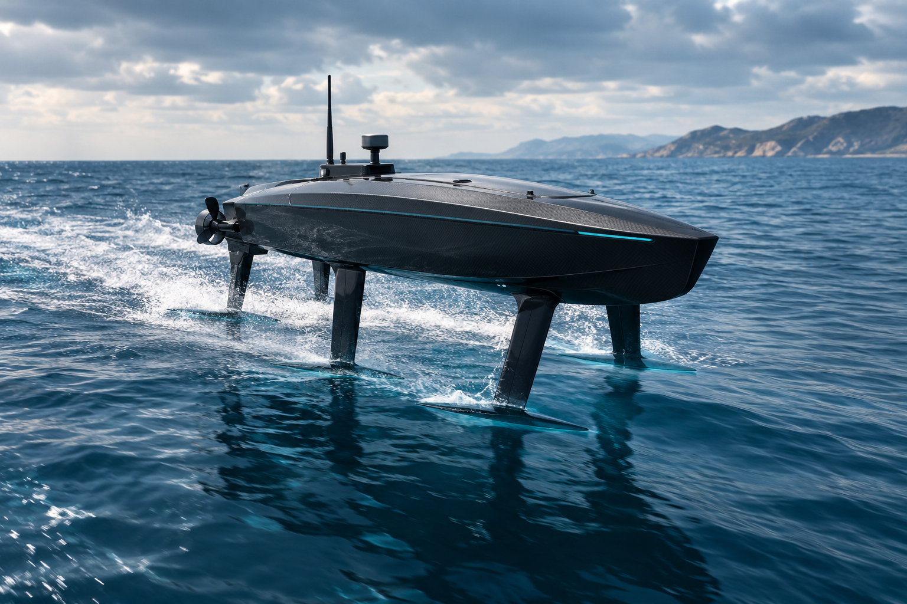

CONFIGURATION A01 / 02
FOREAFT
Two-station tandem
A forward and aft foil station. A simpler baseline to investigate structural mass, drag and control requirements.
Introducing the E-foil Drone — a concept for autonomous, electric hydrofoil operations designed to explore a more efficient way to move across water.

SEAL is exploring an autonomous electric surface craft that uses hydrofoil lift to raise much of its hull clear of the water at speed.
The E-foil Drone brings together electric propulsion, a lightweight marine platform and autonomous navigation. The ambition is to investigate efficient, intelligent movement across water — beginning with a focused engineering demonstrator and a disciplined path from concept to validation.
Three engineering disciplines shape the EFD concept. Each must work as part of one integrated marine system.
Submerged lifting surfaces intended to reduce hull contact with the water in foilborne operation.
A battery-electric powertrain, with propulsion and onboard electronics treated as separate systems.
Navigation, sensing and active vehicle control are central research and development challenges.
SEAL is evaluating alternative foil arrangements before committing to a production architecture.
A forward and aft foil station. A simpler baseline to investigate structural mass, drag and control requirements.
Four lifting panels with more potential for differential lift control, balanced against additional hardware and complexity.
Concept diagrams only. Final geometry, dimensions and control authority remain subject to analysis and testing.
These figures are working design objectives for the current study — not verified specifications or demonstrated performance.
SEAL is at the idea and early engineering study stage. The next steps are about proving the fundamentals before making performance claims.
Mission definition, preliminary mass and energy budgets, and foil architecture comparison.
Hydrodynamic modelling, structural design, propulsion matching and control-system development.
Build an instrumented demonstrator and validate hullborne, takeoff and foilborne operation.
Measure real energy use, control stability and operating limits in progressively more demanding conditions.
“The opportunity is not simply to build a faster craft. It is to rethink how intelligent electric systems can operate on water.”
We welcome thoughtful conversations with engineers, researchers, potential collaborators and early supporters who are interested in the future of autonomous marine systems.
Contact the founder ↗